Objective - Continue to develop the Ecommerce website by adding features that bring value to end users in a way that accurately reflects the Geodesys brand.
When joining the Geodesys delivery team, there was an existing Brand Guideline document which was heavily focussed around print/advert design. This made it difficult to understand how the brand should be used on digital materials. Therefore, I suggested to the Marketing team that we needed to explore the possibility of creating a Design System. This would enable us to have a set of reusable components, guided by clear standards, giving me the autonomy I needed to bring the brand into use on digital material, and keeping everything very consistent.
Personas are fictional characters, which you create based upon your research in order to represent the different user types that might use your service, product, site, or brand in a similar way. Creating personas help you to understand your users’ needs, experiences, behaviours and goals. I took some time when joining the Geodesys team, after carrying out stakeholder interviews and meeting a number of our clients, to define a set of personas.
Once fully understanding each personas needs, goals, pain points & typical actions, I went on to create User Flow visuals. Each User Flow defined the steps for a certain journey which a user would carry out. These visuals have been very useful when onboarding new members of the team, to help them have a deep understanding of not only our user base, but also the various routes which can be taken across the website.
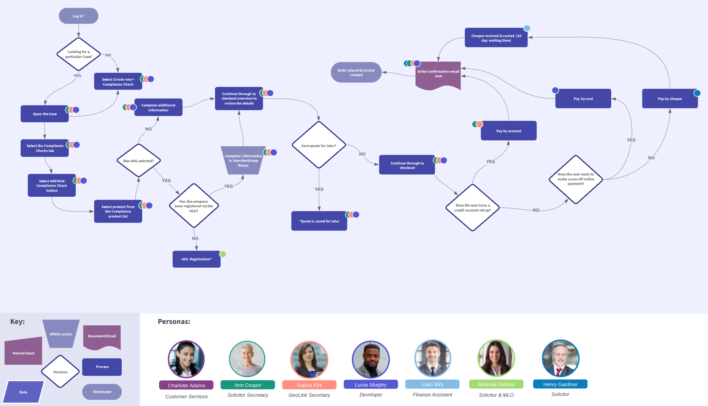
Throughout our various Geodesys projects, I've carried out a number of remote usability sessions with various different types of users. Before arranging the sessions, I first wrote up the objective, user info, questions, hypothesis & scenarios so that we had a plan of what and how we wanted to go about the sessions. I got together with the Sales team, and we worked to collate a list of appropriate users to contact. I then proposed an email to ask if they would be interested in joining a session, explaining how they would work, along with a voucher incentive for encouragement.
Once I had received replies I then arranged a suitable date & time with each person, and booked zoom appointments accordingly. Each session was about 1 hour, I explain at the start why we are running the sessions and asked whether they would be happy for them to be recorded, confirming the videos would only be used by myself to look back on the feedback given.
Each user started off working through the scenarios I had set out for them, while screen sharing so that I could observe how they used the platform. By setting up these scenarios and watching the user work out independently how to use the interface, it really helped me to understand any pitfalls or confusions within their journey. One of our biggest findings was that the 'Select' icon we used in the mapping toolbar used an icon of a house to represent selecting a property on the map. After completing a couple of sessions with users it became very clear that we had used the wrong choice of iconography here, as users thought that this button was to navigate back to the homepage rather than what it's intended use was. From gathering this feedback, it meant we were able to make informed changes to the toolbar, prioritising the change of icon before we released the MVP to the live environment. I redesigned the toolbar and then set up some more sessions with different users, and found that this time around they were comfortable using the button for what it was intended for.
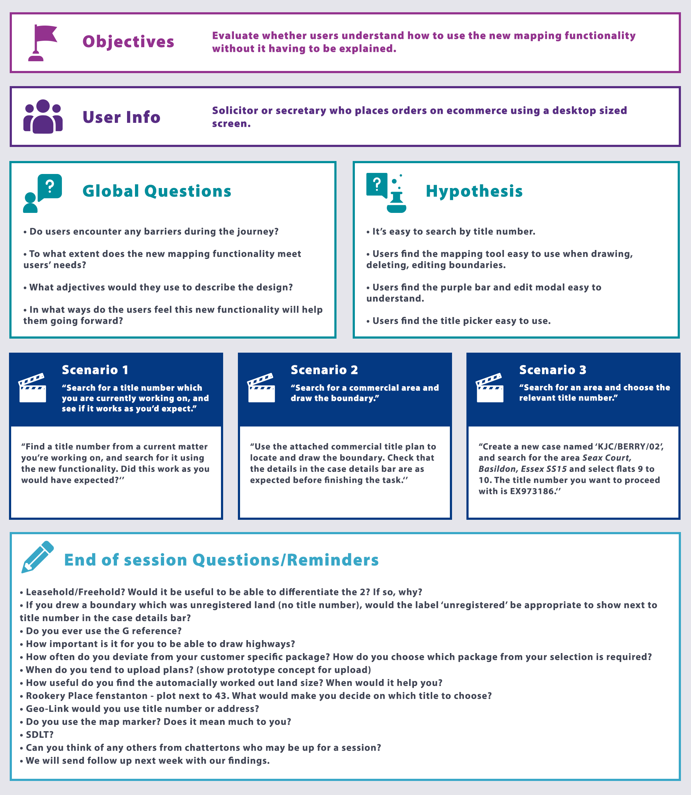
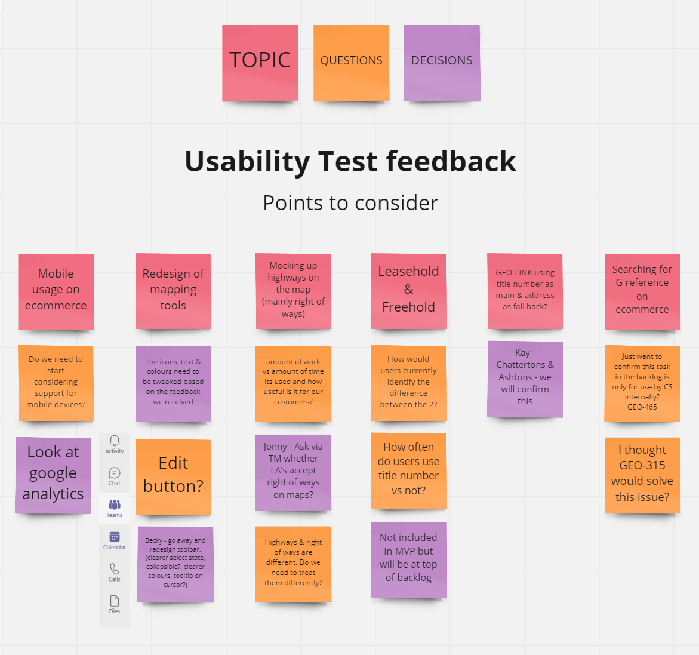
While working on this mapping project, there were initially a lot of assumptions being made about the upload plan feature, and whether this was needed or not going forward. Many of the stakeholders had different views on this, and knowing that we only wanted to create an MVP for the time being, we had to make a decision on this which was backed up by data. Therefore, I decided that creating a survey to find out more was the most appropriate method for gathering feedback at this stage.
I used the tool HotJar to create this survey (as shown in the 2 images below). I firstly wanted to find out how many users actually use that feature currently, and then from the users who answered saying they do, I wanted to find out why. Using a number of multiple choice options, and providing the choice of 'Other' with a free text box so that users could explain more, I found the results to be very insightful.
Out of all the users who answered 'Yes' to the first question, 46% of them answered the why question as 'It is just what I always do'. This response being almost half of user base, helped us to understand that we needed to enhance our communication with our customers, and increase as well as tailoring the training we provide. It also helped us to see that this feature is not necessarily needed for the MVP, as long as we can strengthen the feature education with our users on how to effectively use our mapping tool, meaning there would be no need to upload plans.
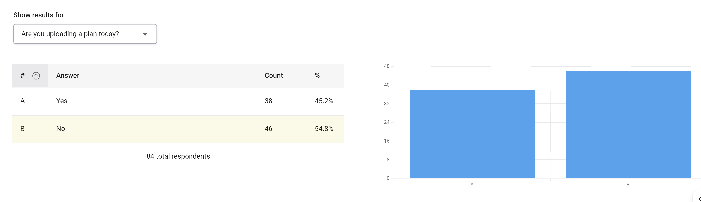
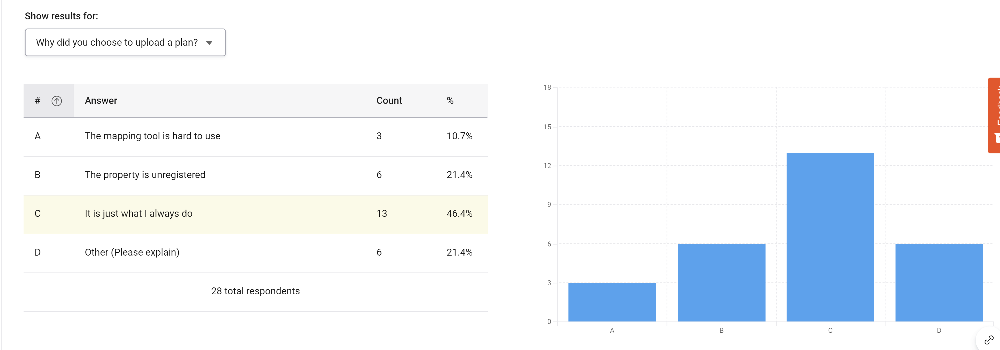
I set up some custom events within Google Tag Manager to enable me to track the current usage of the undo & redo buttons on our existing mapping tool. I used the button id as a unique CSS selector within tag manager to ensure I was targeting the correct button.
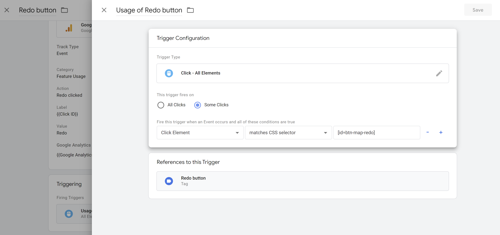
After leaving GA to track my events for a number of weeks, I then checked the results, which showed that the Undo button on the mapping tool had been used 227 times, with 122 of those being unique events, and the Redo button had been used just 7 times with 5 being unique. This data gave me a clear view of the overall usage of these buttons, meaning I was able to take these findings to our Product Owner to discuss how this supports the decision of prioritising the Undo button for MVP, but leaving the Redo button to do in the next iteration.
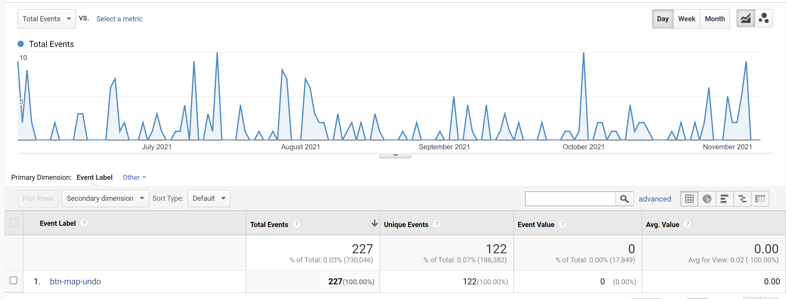
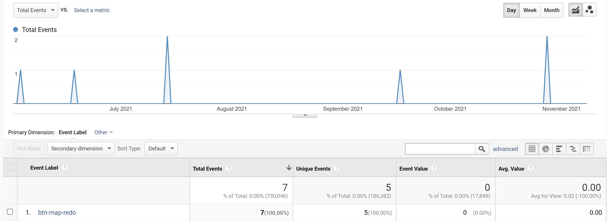
I have completed a number of wireframes while working within the Geodesys delivery team. I usually always start off with simple wireframes, either hand drawn for speed, or using a tool such as InVision. These are to help me lay out content and functionality on each page of the UI, taking into account user needs and journeys. Because the purpose of these wireframes is to establish the basic structure of each page, it is not necessary to take anything away from this by adding high fidelity visual design elements. An example is shown below.
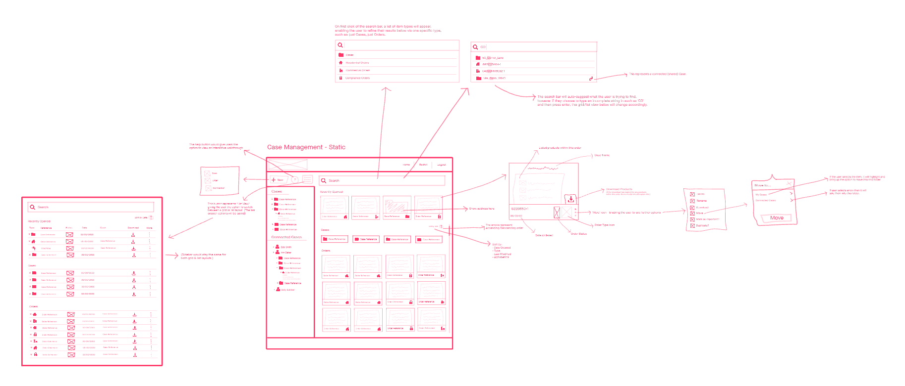
At the beginning of each project, we carry out user story mapping and event storming sessions. These sessions are visual exercises that product managers & development teams define the work that will create the most delightful user experience. These techniques are used to improve teams’ understanding of their customers and to prioritize work.
Once we have completed these sessions, we are then able to get an idea of which user stories are needed for the project, and could then have regular amigos sessions to scope out acceptance criteria, break the stories down and add tasks against them. User stories help to achieve cross-team clarity on what to build, for whom, why, and when.
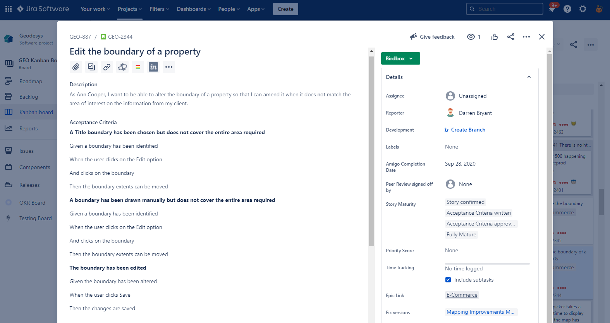
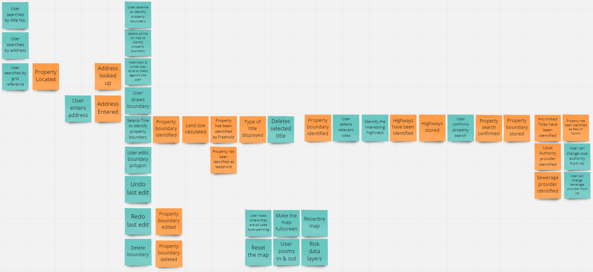
I frequently create, and amend interactive prototypes that I tend to build using Adobe xd. These prototypes are so valuable and useful for everyone involved, as they are used as a proof of concept for what we plan to build. They offer a visual guide for the developers to use while implementing user interfaces, as well as a way of demoing ideas to stakeholders, using for scenario based usability sessions and much more. An example is shown below.